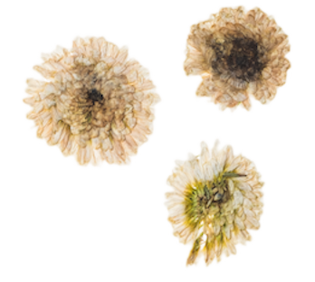

Hamster Wheel
Hamster in the wild would travel 5.5 miles per night. And in order for them to mimic this activity they need to have hamster wheels
Sizes of Wheels
The size of your hamster wheel depends on the size of your full-grown hamster. Your hamster should be able to run in the wheel without its back arching, but if the wheel is too big, your hamster will have a difficult time actually running and moving the wheel.


Wheel type
In addition to providing the correct size wheel for your hamster, it's essential to choose the appropriate constructive material. Wheel surfaces should not be too smooth as to provide enough grip, but also not too rough to damage a hamsters footpads.

Wheels featuring open metal slots
This type of wheel are not recommended because hamster feet can easily become stuck and cause injury.
Metal wheels with mesh overlay
This type of wheel are an acceptable option, but closely monitor your hamster for any foot lesions—excessive running on this type of wheel can cause footpad injuries.
Hideouts

Hamster is a pray animals that is why they need hideouts to sleep in or just go somewhere to feel safe. There are plenty of different types of hideouts

Chew Toys
Hamsters are small rodents. The word “rodent” comes from the Latin word “rodere,” which means “to gnaw.” Gnawing is a very important activity for hamsters, as their upper and lower front teeth (known as incisors), are covered by yellow-orange enamel and continuously grow throughout their life. It is critical that these small animals gnaw to wear down their continuously growing front teeth as they grow.
To lessen the chance of developing overgrown incisors, hamsters should be given small, soft wood blocks or other appropriate wooden chew toys made for small rodents on which they can chew and wear down their teeth.